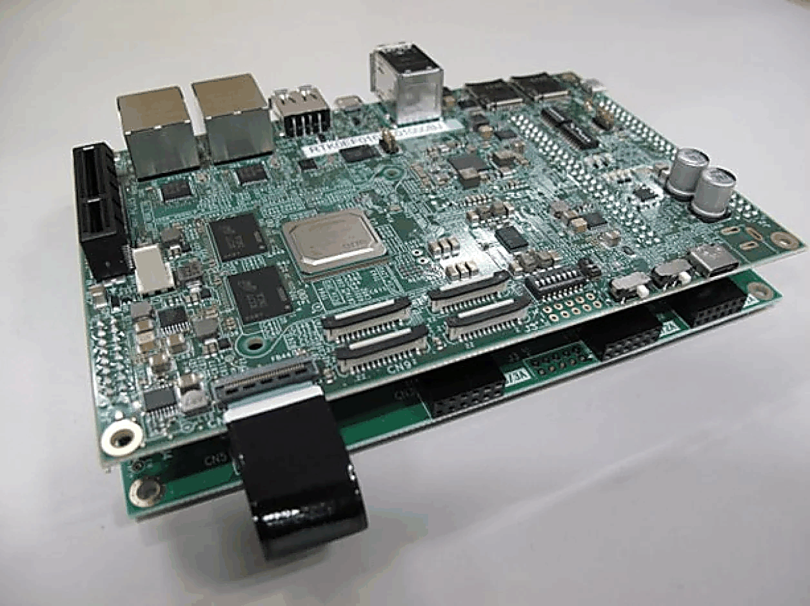
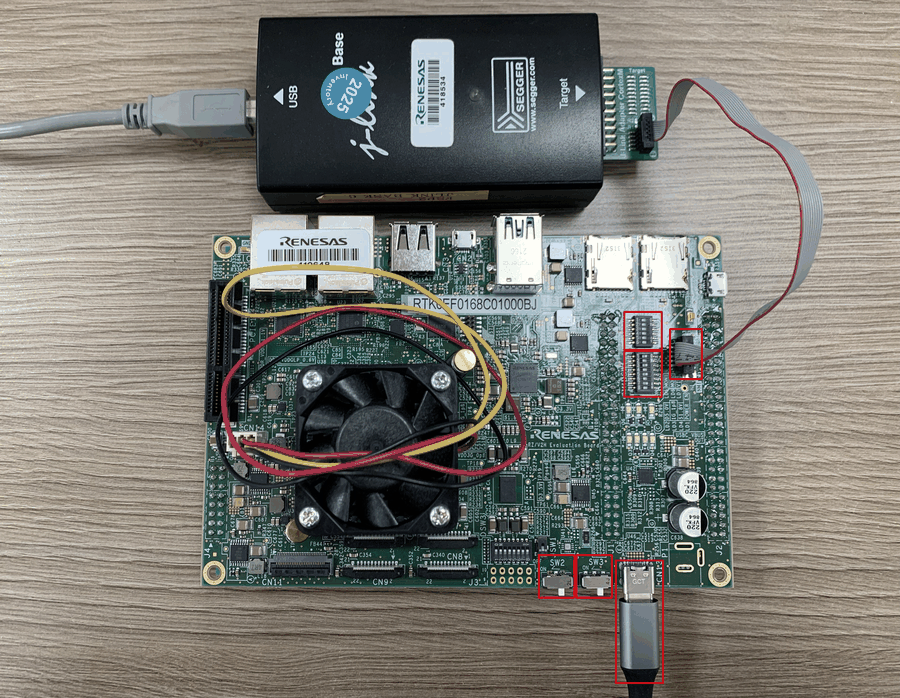

RZV2H-EVK
The RZV2H-EVK is an evaluation board for the Renesas RZ/V2H (R9A09G057)
MPU. NuttX is ported to run on one of the two Cortex-R8 real-time cores
(CR8_0).
Board Overview


See the RZ/V2H product page for information about the RZ/V2H MPU.
Board Set-up


The following steps set up the board to debug/run NuttX over SWD with a J-Link debugger:
Configure the SWD interface to use the J-Link debugger via the DIP switches (highlighted in red in the picture above):
DSW 1
Set
DSW 2
Set
1-1
ON
2-1
OFF
1-2
OFF
2-2
OFF
1-3
ON
2-3
OFF
1-4
OFF
2-4
OFF
1-5
ON
2-5
OFF
1-6
OFF
2-6
OFF
1-7
ON
1-8
OFF
Connect CN1 to the J-Link debugger.
Make sure SW2 and SW3 are OFF before connecting CN13 to the power supply.
After CN13 is connected to the power supply, turn SW3 ON first, then turn SW2 ON.
To power off the board, reverse the order: disconnect the J-Link debugger first, then turn SW2 OFF, then SW3 OFF, and only then remove power.
Getting the HAL Renesas
Clock bring-up (see below) is implemented on top of Renesas’ vendored FSP
BSP code, which ships in a separate hal_renesas repository and is
not part of the nuttx git tree.
make context (run automatically as part of a normal build) clones the
repository at the pinned version into
arch/arm/src/common/renesas/hal_renesas, as defined in
arch/arm/src/common/renesas/Make.defs. Nothing needs to be cloned
manually. make distclean removes it.
HAL_RENESAS_URL and HAL_RENESAS_VERSION can be set in the
environment to use another repository or revision, for example a local
checkout:
HAL_RENESAS_URL=/path/to/hal_renesas make
Serial Consoles
The default nsh configuration uses SCI channel 0 as the serial console
at 115200 baud, 8 data bits, no parity, and one stop bit. The board pin
definitions route SCI0 as follows:
Signal |
Pin |
Board definition |
|---|---|---|
TXD0 |
|
|
RXD0 |
|
|
Connect the USB-to-UART adapter to the CN3 Pmod contacts shown below:
CN3 pin |
CN3 signal |
SoC pin |
USB-to-UART connection |
|---|---|---|---|
1 |
CTS |
|
RTS (Unused) |
2 |
TXD0 |
|
RX |
3 |
RXD0 |
|
TX |
4 |
RTS |
|
CTS (Unused) |
5 |
GND |
– |
GND |
6 |
VCC |
– |
VCC |
7 |
IO1 |
|
Unused |
8 |
IO2 |
|
Unused |
9 |
IO3 |
|
Unused |
10 |
IO4 |
|
Unused |
11 |
GND |
– |
Unused |
12 |
VCC |
– |
Unused |
Cross the data lines so that CN3 TXD0 connects to the adapter RX and CN3 RXD0 connects to the adapter TX. Hardware flow control is not enabled, so CTS and RTS remain disconnected. Use a 3.3 V TTL UART adapter, not an RS-232 adapter. The table assumes that the adapter is powered through USB; do not connect either CN3 VCC contact to the adapter.
The relevant default options are:
CONFIG_RZV2H_UART_SCI=y
CONFIG_RZV2H_SCI_B_UART0=y
CONFIG_SCI0_SERIAL_CONSOLE=y
CONFIG_SCI0_BAUD=115200
CONFIG_SCI0_BITS=8
CONFIG_SCI0_PARITY=0
CONFIG_SCI0_2STOP=0
After boot, SCI0 is available as both /dev/console and /dev/ttyS0.
The terminal should display the NuttX banner followed by the nsh> prompt.
Verify the registration with:
nsh> ls /dev
/dev:
console
null
ttyS0
zero
Additional enabled SCI channels are registered as later /dev/ttyS*
devices in ascending hardware-channel order. Their TX and RX pin choices are
board-specific and are defined by BOARD_SCIn_TXD_GPIO and
BOARD_SCIn_RXD_GPIO in boards/arm/rzv2h/rzv2h-evk/include/board.h.
QSPI Flash
The board port drives the xSPI controller in QSPI mode (see
the RZV2H peripheral overview) to talk to a SPI NOR
flash device. There is no flash part wired into the NuttX tree for this
board; select the matching CONFIG_MTD_* driver for the part actually
fitted on the EVK before enabling CONFIG_RZV2H_QSPI.
rzv2h_qspi_initialize()
(boards/arm/rzv2h/rzv2h-evk/src/rzv2h_qspi.c) brings up the bus,
initializes the selected MTD flash driver, and then either:
mounts the whole chip as a single flat LittleFS volume at
/mnt/qspi(default), orif
CONFIG_MTD_PARTITIONis enabled, splits the chip into three MTD partitions first (see Partitioning below), and mounts LittleFS on the remaining space only.
Read protocol
The default read protocol is 1S-4S-4S. 1S-1S-1S, 1S-2S-2S,
and 4S-4S-4S also work on this board. They are selected with the
CONFIG_RZV2H_EVK_QSPI_N25QXXX_PROTOCOL_* choice (see
the RZV2H peripheral overview).
This board ties XSPI0_DS to GND through a 10K resistor (R47). It
also leaves XSPI0_IO4-XSPI0_IO7 unconnected to the flash. As a
result, the DDR protocols cannot work here:
Selecting
CONFIG_RZV2H_EVK_QSPI_N25QXXX_PROTOCOL_4S4D4Dstops the build with an#error.8D-8D-8Dis not supported.
Partitioning
Enabling CONFIG_MTD_PARTITION (plus CONFIG_MTD_CONFIG or
CONFIG_MTD_CONFIG_NVS) makes rzv2h_qspi_partition() divide
the flash chip into three independent regions, so that firmware,
parameters, and logging cannot corrupt one another on the same chip:
Partition |
Size (Kconfig) |
Exposed as |
Purpose |
|---|---|---|---|
Firmware image |
|
|
Fixed-offset region for a flight-stack (e.g. PX4) firmware image, read/written directly by a bootloader/loader |
Parameter/configuration |
|
|
Key/value parameter and configuration store, isolated from filesystem I/O |
Mission data / flight logs |
remainder of the chip |
|
Ordinary files: mission data, flight logs, and (optionally) the redirected syslog file described below |
Both partition sizes are rounded down to a multiple of the flash erase
size. If the requested firmware and parameter partitions do not fit
within the chip’s erase-block count, rzv2h_qspi_initialize()
fails with an error logged via syslog().
When CONFIG_MTD_PARTITION is disabled, none of the above applies and
the chip is used as a single flat LittleFS volume, as before.
Persistent syslog
CONFIG_RZV2H_EVK_QSPI_SYSLOG_FILE redirects kernel syslog() output to
a file on the mounted QSPI LittleFS volume (default path
/mnt/qspi/syslog.txt, set via CONFIG_RZV2H_EVK_QSPI_SYSLOG_FILE_PATH)
once it is mounted, so log messages persist across resets. This requires
CONFIG_FS_LITTLEFS and CONFIG_SYSLOG_FILE. When
CONFIG_MTD_PARTITION is enabled, this file lives in the mission-data
/ flight-log partition described above, not in the firmware or parameter
partitions.
Bring-up
This section describes what has been brought up so far for the CR8_0 core. Clock, MPU, GIC, timer, GPIO, and SCI-B UART support described on this page are implemented. Board options not described here may still be placeholders.
Clock control
rzv2h_clockconfig() (arch/arm/src/rzv2h/rzv2h_clockconfig.c) calls
into bsp_clock_init() from the vendored Renesas FSP BSP
(arch/arm/src/common/renesas/hal_renesas/...), which programs the PLL and clock
tree. The system tick timer (see Timer below) derives its input clock from
the resulting BSP_CFG_CLOCK_I6CLK_HZ value, so this must run before the
timer is configured.
MPU enablement
arch/arm/src/rzv2h/rzv2h_mpu_region.c defines a static PMSAv7 region
table (g_mpu_region_table[]) for CR8 core 0:
Region 0 - ITCM (0x00000000, 128 KB), read-only, holds the exception vector table copied there by
arm_boot().Region 1 - DTCM (0x00020000, 128 KB), read/write, execute-never.
Region 2 - RCPU-SRAM (cacheable), read/write, execute-never default for the whole image range.
Last region - the read-only code window (
__mpu_code_start..__mpu_code_end, provided by the linker script), read-only and executable, layered on top of region 2 so code remains executable while data stays non-executable.
Because PMSAv7 lets the highest-numbered matching region win, the executable code window must be the last entry in the table, and its size must be padded to a power of two by the linker script to satisfy PMSAv7’s size/alignment rule.
Interrupt initialization
up_irqinitialize() (arch/arm/src/rzv2h/rzv2h_irq.c) brings up the
Generic Interrupt Controller (GIC): arm_gic0_initialize() runs once, on
CPU0 only, followed by arm_gic_initialize() on every CPU. Interrupts are
then unmasked with up_irq_enable().
Beyond the GIC’s fixed interrupt lines, the CR8 core’s INTC also exposes a pool of 127 programmable “SEL” lines used by peripherals and the TINT pin-interrupt controller.
Timer
arch/arm/src/rzv2h/rzv2h_timerisr.c uses the Arm MPCore Private Timer
as the system tick source. Its clock is BSP_CFG_CLOCK_I6CLK_HZ / 2, and
the reload value is derived from CLK_TCK so the timer fires every system
tick. The Private Timer interrupt (BSP IRQn -3) maps to GIC INTID 29.
Loading Code
Use a J-Link or another SWD/JTAG probe to load debugger configurations.
Configurations
nsh
NuttShell configuration exercising clock, MPU, interrupt/timer, GPIO, and
SCI-B UART bring-up on CR8_0. SCI0 provides the default 115200-8N1 NSH
console through CN3 and is registered as /dev/console and
/dev/ttyS0.
nsh-leds
This configuration enables CONFIG_USERLED, registers /dev/userleds,
and includes the standard NuttX leds example. Run leds to cycle the
active-low P0_0 and P0_1 LED outputs. The generic /dev/gpio1 and
/dev/gpio2 interfaces are also available for individual read/write
testing. Automatic OS-status LED control through CONFIG_ARCH_LEDS is
not yet implemented.
nsh-xspi
Exercises the xSPI controller in QSPI mode (see QSPI Flash above).
Enables CONFIG_RZV2H_QSPI with an N25QXXX MTD flash driver,
mounted as a single flat LittleFS volume at /mnt/qspi. Partitioning
(CONFIG_MTD_PARTITION) and syslog redirection
(CONFIG_RZV2H_EVK_QSPI_SYSLOG_FILE) are optional features (see above) not
enabled by this defconfig. As with the other configurations, there is no
working console driver yet, so this is intended for bring-up validation
with a debugger.